ADAS Lane
自主ADAS车道线检测的多源数据融合软件研发方法
Research and Development Method of Multi-sensor Data Fusion Software for ADAS Lane Boundaries Detection Applied to Autonomous Vehicle
[toc]
软件概述
**背景：**道路结构的理解对于辅助驾驶和自动驾驶的任何应用都至关重要。为了保证乘客和其他道路使用者的安全，必须在正确且可靠的道路结构理解的基础上进行规划和导航。汽车制造商将一级供应商的现成车道检测解决方案集成到当前商业化的车辆中，这些解决方案通常具有单一和基于视觉的智能传感器。经过研究和行业共识，这样的解决方案在ADAS的系统中是不够的，仍然需要进行多源数据融合软件的研发，以实现车道边界的正确表达。
**主题：**研发“自主ADAS车道线检测的多源数据融合软件”是使用传感器数据来构建道路结构的正确理解，内容上是车道边界的正确表达，形式上是进行车道划分和建立准确的道路表示。
方法：**本研发方法解决了**基于智能摄像头数据（特别是正面摄像头）**和毫米波雷达的提示性的道路特征**的多传感器融合的车道边界识别问题。
名词解释
车道边线
车辆上安装了传感器。在保证检测的信度和效度的前提下，在传感器的检测范围内，传感器会以一定周期检测并输出的纵向标线称之为车道边线。如图一所示，在虚线锥形框内为车道边线。
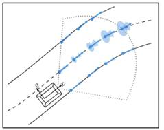
图一
车体坐标系用来描述车辆周围的物体和本车之间的相对位置关系。由SAE J670 定义的轴系方向和ISO 8855:1991定义的轴系方向是等同接受的，应基于分析或测试的需要选择合适的方向。
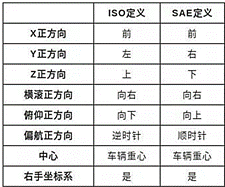
具备异常处理与安全保障，在检测过程中，如遇到异常情况（如车道线模糊不清、传感器故障等），软件应能进行相应的处理，确保车辆行驶的安全性和稳定性。以下为示例
表1 异常处理功能描述
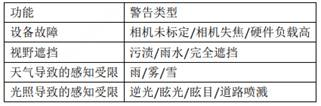
研发方法
本研发方法解决了**基于智能摄像头数据**（特别是正面摄像头）**和毫米波提示性的道路特征**的多传感器融合的车道边界识别问题。
研发内容（一），提出了一种独立于传感器性质的智能传感器测量的适当建模方法。
研发内容（二），基于研发内容（一）建模方法的车道边线跟踪和融合算法设计。
研发内容（三），毫米波提示性的道路特征检测的整合，以支持车道边线估计。
为了进一步提高软件的性能和可靠性，后续研发优化需要就以下四个方面进行：1. 优化融合算法：进一步研究和优化融合算法，提高其对复杂环境和不同天气条件的适应能力。2. 硬件优化：优化硬件接口设计和资源配置，提高软件的运行效率。3. 软件架构优化：进一步优化软件架构，提高软件的扩展性和可维护性。4. 多模态融合：引入更多类型的传感器，如雷达、激光雷达等。
逻辑框图
根据开发车型ADAS传感器配置参数，确定软件外部交互模块，如下图2。

图2 车道融合外部交互模块示例
### 接口
根据算法使用需求，确定与各模块间具体交互，相关交互表 2。
表2 车道融合模块外部交互信号描述
| 序号 | 外部模块 | 信号描述 |
|---|---|---|
| 1 | 融合数据输入 | 车辆底盘运动状态，如车速、Yaw Rate、Steer Angle等 传感器运行状态，如初始化、标定失败、Failsafe状态等 智能摄像头的道路边线参数、类别毫米波雷达的提示性的道路特征 |
| 6 | 融合数据输出 | 模块运行状态道路边线参数 道路边线的置信度0-3级分类车道边线ID、类别、生命周期计数等 |
研究对象的数学建模
研究对象进行建模：车道模型的选择会影响可表示的车道类型以及适用的估计算法。车道和道路模型可分为三类：参数模型、非参数模型和半参数模型。
参数化模型：有限数量的参数映射到简单的几何曲线中。常见的表示法有直线、抛物线、圆周、圆弧和双曲线。第一类表示度有限，但适用于RANSAC、Hough变换和消失点等高效拟合算法。这实现了简单的应用，但具有很强的抗异常值和抗噪声能力，其利用直线模型的RANSAC和卡尔曼滤波器。另一方面，如果预期的应用程序比LKA（车道保持助手）更复杂，则需要更大的灵活性，严格参数化是不可行的解决方案。
非参数模型：在没有先验指定结构的情况下，结果由数据决定。它可能由连续表示（例如，连续像素）组成，但可能不考虑任何平滑性或可微性。这种范式在所有这些应用中都是优选的，其中特征是从图像矩阵中发布的，并直接从相机的角度提取，通常基于深度学习。
半参数模型：在存在参数化和非参数化组件的情况下，这些模型不会为路径假设任何特定的全局几何体。这一类别主要包括分段定义函数的不同下倾，即所谓的样条曲线。基于智能传感器，选择了回旋样条曲线模型，以保证曲线曲率在不同线段上的连续性。另一方面，一种更通用的车道模型，该模型还将车道之间的约束和先验（平行度、最小车道宽度等）实现为Graph SLAM方法中的边形式。
如我们所示，在半参数模型的回旋样条线表示下估计道路边界有几个优点。然而，该曲线的公式化和参数化描述给管理这些数学对象带来了额外的复杂性和数值难度。其基本思想是，一组有序的控制点与适当选择的插值方法相结合，可以完全描述几何曲线。在我们的框架中，这些控制点被跟踪并称为特征。一条曲线𝐶𝑖 由有限数量的特征组成𝐹𝑗 定义为：
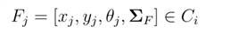
此表示描述了指定横坐标的曲线𝑥𝑗 , 纵坐标𝑦𝑗 和航向𝜃𝑗 它的控制点。考虑到应用领域和所描述实体的不确定性，这些值构成了一个随机向量和∑𝐹 是它的协方差矩阵。
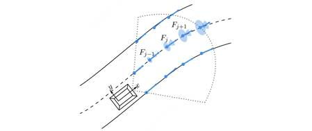
图3 研究对象的数学建模示例
在图3中，特征𝐹𝑗 沿着测量以恒定的相互间隔进行采样。椭圆和圆锥体分别用于图形显示位置和方向的不确定性。
Tracking级的信息融合技术
跟踪方法的主要步骤：对回旋样条道路模型的初始化、预测、关联、更新和自适应。
所采用的程序包括以下步骤：
Ø 初始化
Ø 预测
Ø 关联
Ø 更新
对于每个检测到的和初始化的特征，使用传统的卡尔曼滤波器进行滤波过程。选择这种方法是因为它的计算成本低，并且在高斯噪声假设下是最优性的，这应该是我们的情况。
对于关联。测量和轨迹之间的关联对于连续集成新的即将到来的信息至关重要。为了做到这一点，需要一个适当的度量来表示特征集之间的距离𝐶𝑖 和一个测量𝑀 已定义。据推测，在𝑡 − 1和𝑡, 自我运动足够小，如果它们表示相同的车道边界，则至少允许一个特征在测量上的正交投影。两者之间的马氏距离可以计算为：
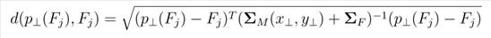
测量和轨迹之间的距离最终定义为选择最高值，其中存在多个投影：
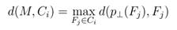
基于这些值构建的距离矩阵允许使用全局邻居邻居（GNN）算法来最终确定关联。
引入：基于d-s证据理论信息融合的多核跟踪方法
目标航迹管理主要是指目标从出现到消亡所经历的过程，通常航迹管理包括 如下几个状态：**新目标、成熟期和消亡期**这三个部分
当一个观测值连续被观测若干帧，那么该目标就是一个新生成的目标；新生成 的目标参与目标关联，若该目标被持续关联，则标志着目标的成熟期，不断利用观 测值去更新目标的成熟度；一旦目标连续失联若干帧，则该目标加入消亡队列中， 准备删除目标。但是这种目标状态转换的形式比较简单，一旦将目标标志为成熟的 目标时，就对控制系统产生了一定的影响，且新目标的生成到目标成熟期太过突兀， 易产生误跟踪传感器杂波的问题，导致系统稳定性不高。
DS 证据理论的本质是提供模糊过程，随着时间的推移以及每一步的证据迭代， 能够使这种模糊过程变得越来越清晰，从而达到收敛，这种方式能够完美**解决新目 标的生成到目标成熟期比较突兀的问题**。
根据实际控制系统要求，对于有威胁性的目标优先生成，但是对于一些比较杂乱的静止目标不需要输出，防止不当的错误目标影响控制效果。
将成熟期的目标分为 I（重要的）和 U（不重要的），一些对自车存在威胁的目标标志为成熟且重要的，符合人类的注意力聚焦的特点，从而降低系统对障碍物处 理的时间和空间需求。由匹配失败的观测生成的新航迹，通过连续数帧的关联成功， 转变为成熟的航迹；成熟的航迹在连续数帧关联失败后，转变为消亡的航迹，进而 被删除。也就是说，航迹成熟和航迹删除采用的是阈值状态转变法。

其中，事件 A、A1 和 A2 分别是2Θ的一个子集，A 表示当前时刻的航迹状态， A1 表示上一时刻的航迹状态，A2 表示根据当前时刻与该航迹匹配的传感器观测特 性所设定的航迹状态量。
判断目标是否重要的依据包括但不限于：对于多个传感器视野重叠区域，若目标只与一个传感器的观测匹配上，说明该目标很有可能是不重要的杂波观测；对于速度接近于零的目标，其重要性程度低。
软件输出
采用道路特征模型，将其“重建”为连续表示。上述样条曲线表示是在每次迭代时通过以下方式在两个连续特征之间插值曲线而获得的：𝑥 𝑦。此过程通过确定适当的初始曲率来构建回旋样条曲线𝜅0，曲率率𝜅1和回旋线段长度𝑙 对于每对给定的𝐹𝑗 和𝐹𝑗+1.
状态机设计
a) 定义传感器运行所有状态，一般感知融合状态划分为：
L3- 级别： 融合状态正常，融合状态异常；
b) 设定状态跳转决策条件
根据接收到的传感器状态参数、Failsafe程度和数据内容稳定判别，设置融合状态间的跳转条件。
软件实现
常见建模方法包括 C 代码和 Simulink 、Stateflow 建模等。本标准选取自主开发使用的 Simulink 建模方法对软件实现进行说明。
Simulink 代码生成及检查
a) 使用Model Advisor进行单精度检查；
b) 在 Matlab/Simulink 中配置正确的 Autosar 环境，生成相应代码和 ARXML 文件。
c) 对生成代码进行栈开销检查，检查结果不能超出基础软件划定的栈空间。
软件测试
- 单元测试：对软件中的各个模块进行单元测试，确保每个模块的功能正确性和稳定性。
静态测试：根据代码规范以及功能安全要求，确定代码静态测试规则，通过Polyspace，实现相应的模型静态测试；生成静态测试报告，依据测试报告，对软件 进行相应修改。
MIL 测试：MIL测试采用实车离线数据导入到Simulink进行注入测试，开环采集不同路况下交通场景数据进行测试，并辅以部分危险场景Simulink 与 Carmaker 联合仿真测试。
-
集成测试：将所有模块集成在一起进行测试，确保软件的整体功能和性能。
-
性能测试：测试软件的运行速度、响应时间和资源占用情况，以满足自动驾驶系统的实时性要求。
-
实车测试：在实际驾驶环境中进行测试，评估软件的准确性和可靠性。
软件发布
首次发布
a) 提交软件代码到相应服务器；
b) 发布软件释放说明，由基础软件提取代码进行集成释放。
版本维护
a) 按照规范定义软件版本号，编撰版本变更记录表，记录版本更新时间、更新内容、变更需求来源等信息
问题管理表
- QIS 系统
- excel 一元问题管理表
演示动画
全功能分析：
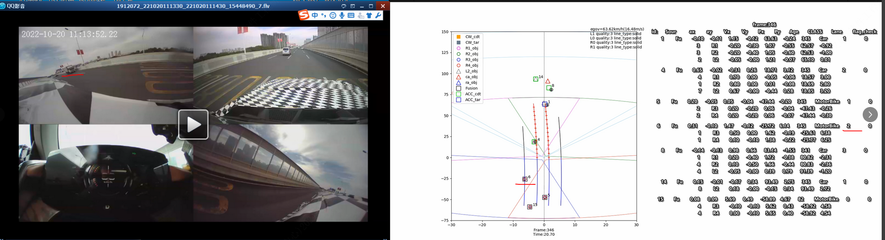
车道线分析：
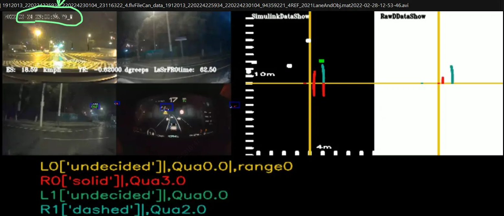
DBC 分析：
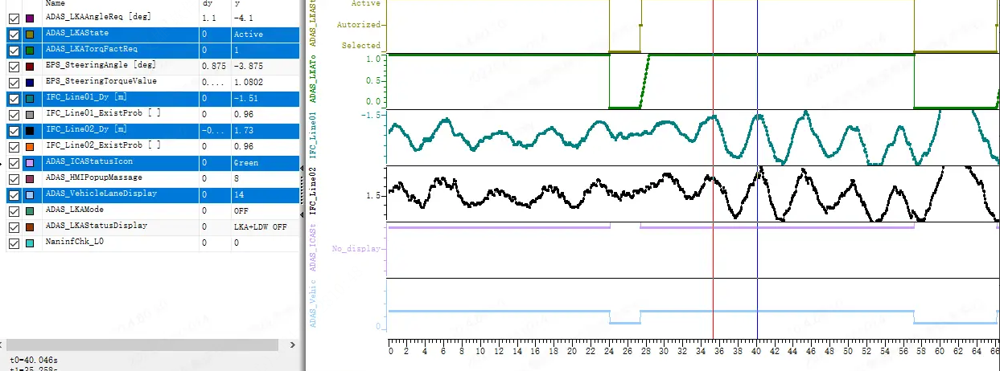
融合结果的报告图片绘制：
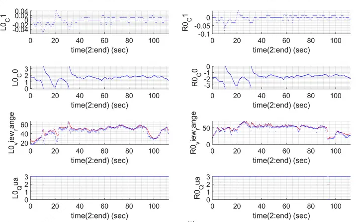
输出文件
2024：企业标准：《自主ADAS车道线检测的多源数据融合软件研发方法》。
2023：质量成果：《质量成果报告_跨平台可拓展的目标融合软件自主开发》，基于M18-2车型，预防类，部门级质量课题，智能软件中心，展现DR/DFMEA/数字化质量管控等输出文件。
2022：技术文档：《L3-软件架构及设计说明书》、《L2软件架构及设计说明书》。企业标准：《感知融合应用软件详细设计说明书编制规范》
2021：技术文档：《L3-路试报告》、《QIS表》、《一元问题管理表》
2020：获奖：《2020东风青年创新创意大赛-D53 L2自主感知融合工具体系开发和应用》。技术文档：《L2自动性能报告生成》、《算法可视化工具》、《底盘脉冲计数车体里程计设计算法说明》、《python 多线程使用方法》、《车道线分段函数、平行约束、ICP配准和后向车道线递推算法模型探索》、《simulink自动连线脚本》、《simulink代码生成gcc编译简例》、《AutoSAR代码生成》、《simulink模型结构体输入操作方法》。
2019：技术文档：《DBC信号矩阵解析与分析》、《一页纸项目管理》、《感知融合接口和坐标系定义》、《测试场景与ENCAP标准》
参考文献
[1]陈文强.基于复杂工况的高精准可预测自动驾驶环境认知方法[D].清华大学,2018. [2] Camarda F , Davoine F , Cherfaoui V ,et al.Multisensor Tracking of Lane Boundaries based on Smart Sensor Fusion[C]//2020 IEEE Intelligent Vehicles Symposium (IV).IEEE, 2020.DOI:10.1109/IV47402.2020.9304638.